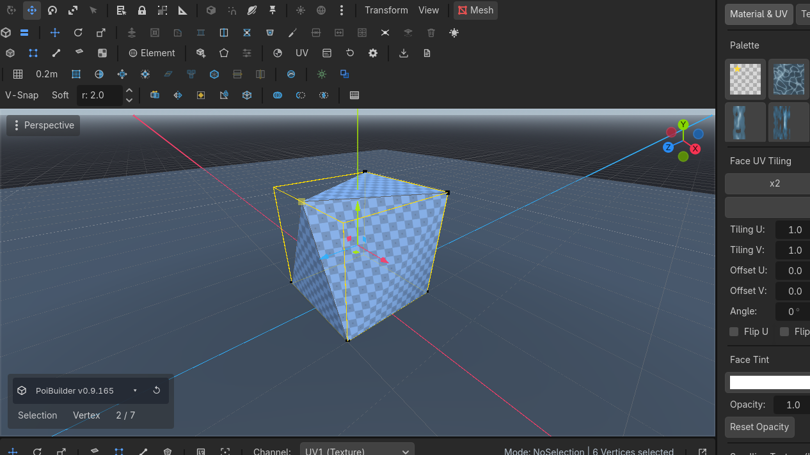
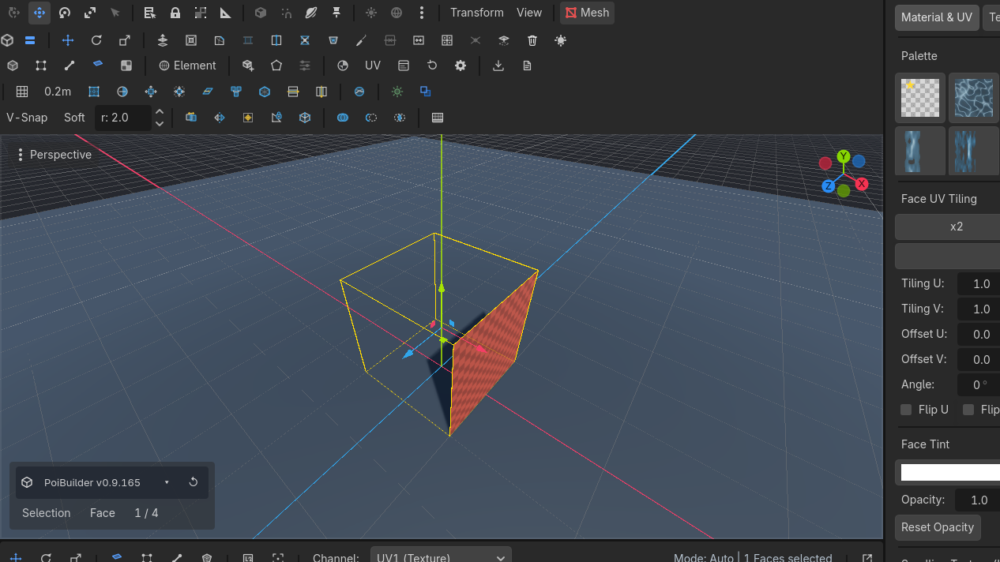
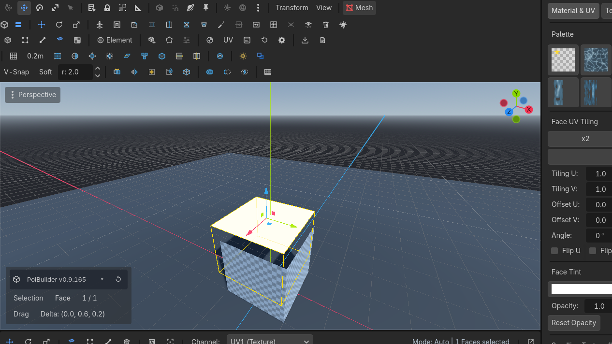

Holes & joins
Bridge two open edges, fill a loop, weld corners, detach a piece into its own object.
Bridge
Connect two boundary open edges with bridging quad faces.
Connect two boundary (open) edges with a face. Alt+B.
Select exactly two open edges. If a button is grey, one of them is welded interior.
Connect
Insert an edge joining edge midpoints or selected vertices.
Insert an edge joining edge midpoints or selected vertices.
Collapse
Selected vertices, edges or faces collapse to a single geometric center.
Selected vertices, edges or faces collapse to a single point.
Fill Hole
Cap an open boundary loop with a new polygon face.
Cap an open boundary loop with a new face. Select the loop (or use  Boundary
Boundary


 Row 3 · Selection Suite
Row 3 · Selection Suite BoundaryUnbound (rebindable)Selects the open boundary edges.Needs: A PBMesh) first.
BoundaryUnbound (rebindable)Selects the open boundary edges.Needs: A PBMesh) first.
Weld
Selected vertices snap to their centroid and weld into one shared vertex group.
Selected shared-vertex groups snap to their centroid and become one group. Positions move; indexes do not. After a weld, those corners select as one vertex — dragging will not tear them apart.

Delete
Deletes selected faces, edges, or vertices from the mesh.
Deletes selected faces. Orphans compact. Look through the opening and you should see the interior.

Detach
Detaches selected faces into a separate new PBMesh sibling object.
Selected faces become a new PBMesh sibling. Undo restores them to the original (node undo, not a mesh snapshot). Move the new object away.

Use cases
Close a subtracted doorway that went too far
Edge mode →  Boundary
Boundary


 Row 3 · Selection Suite
Row 3 · Selection Suite BoundaryUnbound (rebindable)Selects the open boundary edges.Needs: A PBMesh →
BoundaryUnbound (rebindable)Selects the open boundary edges.Needs: A PBMesh →  Fill Hole
Fill Hole


 Row 1 · Mesh Operations
Row 1 · Mesh Operations Fill HoleUnbound (rebindable)Caps open boundary loops with a new face.Needs: An open boundary. Then inset and extrude if you still want a recess.
Fill HoleUnbound (rebindable)Caps open boundary loops with a new face.Needs: An open boundary. Then inset and extrude if you still want a recess.
Split a building into chunks
Face-select a wing. Detach. Origin stays; move the new node. Collision follows the new mesh.
Stop a corner tearing
If a drag splits a corner that should stay sharp-together, those vertices are not welded. Select them (vertex mode) → Weld.
Bridge needs two open edges. Interior edges already have two faces; the button stays grey. Delete a face first if you meant to bridge across a hole.